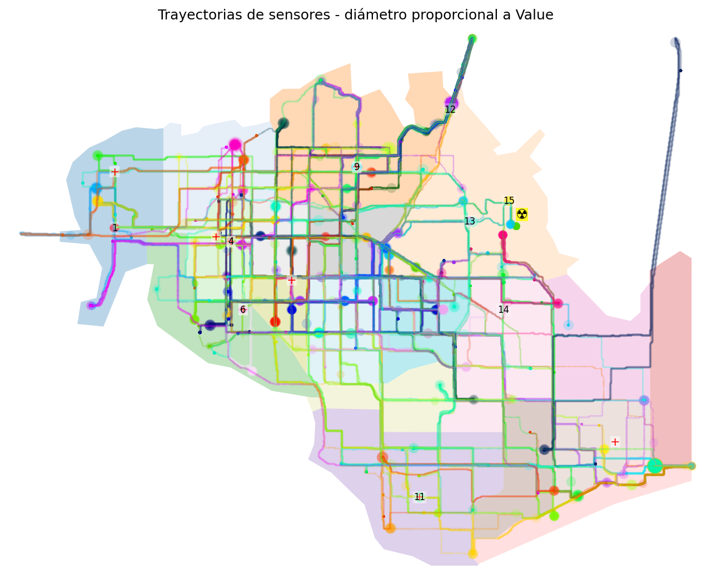
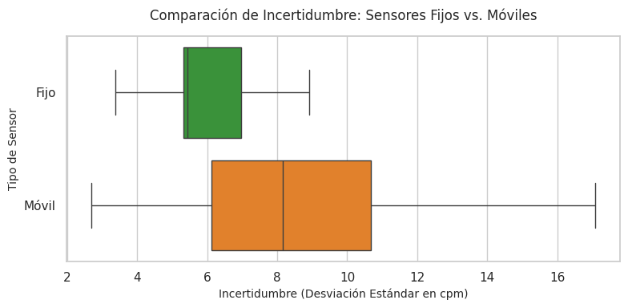
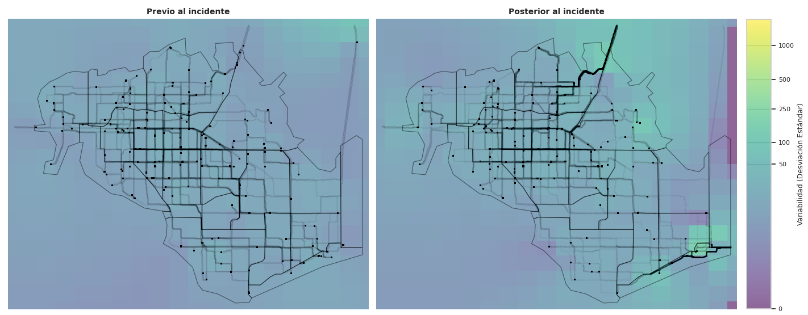
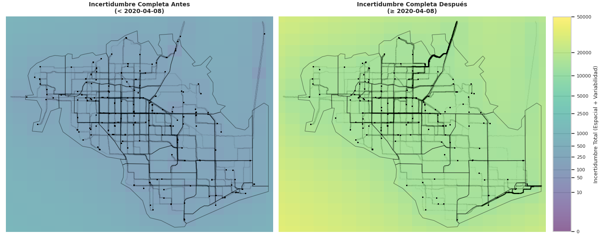
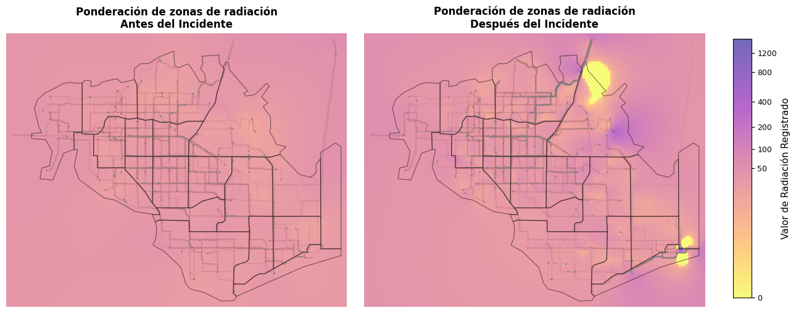
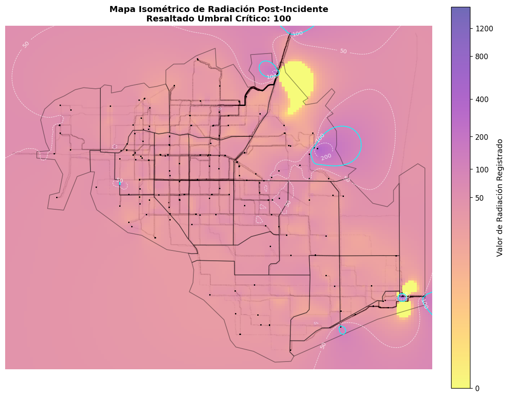

Este informe aborda el análisis de las lecturas de radiación con que cuenta la ciudad de St. Himark donde debido a un terremoto la planta de energía nuclear sufre daños que provocan una fuga de contaminación radiactiva. Además, una fuga de refrigerante salpicó los autos de los empleados, contaminándolos en diferentes niveles. Tiene como principal objetivo detectar potenciales riesgos para la población a la vez que atender la preocupación de la población respecto a la radiación.
St. Himark es una comunidad vibrante ubicada en el Mar de Oceanus. Hogar del mundialmente reconocido Museo de St. Himark, de hermosas playas y de la Reserva Natural de Wilson Forest, St. Himark es una de las mejores ciudades de la región para criar una familia y ofrece empleo en diversas industrias, incluyendo la Planta de Energía Nuclear Always Safe, donde trabajan 700 personas.
Los sensores con los que contamos para realizar el diagnóstico de la situación son de dos tipos. Nueve sensores profesionales fijos financiados por la Planta Always Safe y cincuenta sensores caseros diseñados para colocarse en los automóviles, construidos como parte de una iniciativa ciudadana liderada por miembros de la Sociedad de Ciencias de Himark.
La captura de datos de los sensores moviles se realiza cada 5 segundos y se sube al servidor en la nube para cada lectura los siguientes atributos Timestamp, Sensor-id, Long, Lat, Value, Units, User-id. Para los sensores fijos la frecuencia es la misma pero se omiten los datos de ubicación, Long, Lat, que son conocidos y el User-id.

Si observamos en la figura interactiva 2, filtrando valores aislados y eligiendo un umbral de los valores de lectura por encima de 80, podemos observar algunos patrones con sentido en los valores de radiación a lo largo el tiempo.
Analizamos primero los sensores fijos, provistos por la empresa que gestiona el reactor y los que suponemos a priori mejor calibrados y más confiables.
Observamos que el 15, el más cercano a la central de energía deja de funcionar a partir de un momento pero antes hay una zona que presenta una serie corte de registros altos de radiación. El sensor 13 también registraun pico en un momenta más breve pero cercano al pico del 15 por lo que puede ser significativo. El sensor 12 también cercano a la central registra una serie de valores elevados que en un momento baja y luego vuelve a aumentar lo que podría indicar movimientos cercanos de fuentes contaminadas. El sensor 11 sube en valores en cuanto bajan los del sensor 12 lo que `puede sugerir un desplazamiento de la radiacion en esa dirección. El sensor 9 ve incrementarse sus valores coincidiendo con la segunda suba del sensor 12 lo que puede sugerir un origen común. Para los sensores 13 y 4 se abservan valores levemente más elevados hacia el ultimo cuarto de la linea de tiempo, pero no muy marcado, exploratoriamente podemos pensar algo de radiacion distribuida los alcanza.
Pasando a los sensores móviles, Encontramos un grupo muy marcado, sensores 120, 121, 122, 124, 125, 127, 128, 129 y 145, que registran niveles muy elevados de radiación rodeados de blancos importantes. En el video vemos que esas lecturas elevadas y blancos en los registros se explican por la salida y retorno al mapa y la confluencia en un mismo punto de todos esos sensores. Los otros sensores moviles que nos llaman la atención son 109, 110 y 113 que presentan franjas de valores altos en distíntos momentos. Y finalmente los otros sensores que pasan el filtro parecen tener valores más elevados a partir de la primera mitad, lo que se coincide con los valores más elevados de los sensores 13 y 4.
Los Sensores 118 y 120 que presentan valores altos desde antes del incidente deben ser tomados con recaudo.
En el video y el mapa intractivo de más abajo pueden observarse los desplazamientos de los sensores moviles. En el video como animanción y en el mapa interactivo con el eje temporal proyectado en el eje Z.
Para el video elegimos dos graficas, el mapa que además de seguir la posición de los sensores en el tiempo hace una ponderación de los valores de los sensores cercanos a cada recuadro de la grilla y lo colorea segun la escala. Para poder seguir la evolucion de los valores de cada sensor y poder relacionarlos a la derecha contamos con la evolucion temporal de los valores registrados para cada sensor manteniendo la escala cromática para los valores de radiación.
En el video se puede ver claramente cuando varios de los sensores moviles abandonan el mapa y se pierde su señal.
Para comparar la incertidumbre de los sensores tomamos como base el periodo previo al terremoto donde no hay reportes de fugas de la planta
de energía y por lo tanto no deberían registrarse valores elevados de radiación.
Se observa que los sensores fijos presentan un menor desvio en las lecturas. Sin embargo los sensores móviles se mantienen dentro de la escala de
los valores normales de registro, como consideramos a los previos al terremoto, muy por debajo de lo que serán luego del incidente los valores de radiación.
Por esta razón solo eliminaremos de nuestro set de datos al sensor 118 que presenta valores fuera de rango antes y despues del incidente.

El primer par de mapas muestra la variabilidad de la radiación en las zonas donde efectivamente medimos. Separamos los registros en antes y después del terremoto para poder fijar una linea base pre-incidente y comparar las zonas con mayor variación en los registros que son las que tienen potencial de estar contaminadas. De hecho, en el mapa posterior al incidente, obsevamos varias regiones con variaciones superiores a 100, que coinciden con los registros elevados de radiación que analizamos en el punto previo.

Incorporamos un segundo par de mapas que expone la incertidumbre de la medición, considerando la cobertura geográfica, revelando en amarillo/verde aquellas áreas que presentan un alto índice de duda no porque la radiación falle, sino porque carecemos de cobertura geográfica de sensores en esos sectores específicos durante ese periodo de tiempo. Esto explica que las zonas de incertidumbre bajan al rededor de las ubicaciones de los sensores.

Tras el incidente del terremoto se observa una mayor dispersión de los registros de valores. Debemos atribuir esto sobretodo a la existencia de lecturas de radiación reales.
El mapa isométrico de registros de radiación por zonas nos poermite identificar regiones que registraron valores sostenidos por encima del umbral de 100 cpm. Las regiones con cambios bruscos de gradiente se explican por registros disimiles muy cercanos. Este grafico debe ser leído con la consideración de que las áreas que no presentan trayectorias o sensores cercanos tienen mayor incertidumbre.


Tenemos lecturas muy fuertes en la intersección de la Autopista Wilson Forest con la Avenida Hilmark. Además siguiendo la costa aparece orta región sospechosa en Scenic Vista. La zona cercana a la Planta de Energía muestra valores elevados en un radio de influencia extenso, cosa que es lógica si concideramos que es el origen principal de radiación. Luego destaca la salida por el el Puente Jade donde más de un sensor movil registra valores por encima de 100 cpm.
En la animación compartida más arriba puede verse los automóviles que entran y salen de la ciudad.
En particular nos interesan los vinculados a los sensores 120, 121, 122, 124, 125, 127, 128, 129 y 145,
que como destacamos antes registron valores importantes de radiación entre entradas y salidas de la ciudad.
Otros sensores que presentas rastros sostenidos de radiacion en el tiempo son 102, 132, 141, 142, 146
Más allá de que no descarté ningún sensor en mi análisis yo intentaría agregar más de los dos tipos de sensores. Colocaría los fijos en los puentes y accesos de la cuidad y trataría que los moviles estuvieran uniformemente distribuidos. En particular considero que para este incidente puntual hubiera side de ayuda tener sensores fijos en el centro de la ciudad, Jade Ave y Cascadia St, y en la zona más despoblada de Pepper Mill, Terraping Springs y Scenic Vista.
Según los registros de la mayoría de los sensores, los niveles de radiación de la ciudad permanecen en un nivel más alto que el que había previo al terremoto. Por lo que es seguro que hay que tomar medidas para seguir reduciendolos. En particular prestaría atención a quienes presenten sintomas de radiacion en la zona norte de la cuidad dado que se observan varios registros cercanos a los hospitales. Además revisaría el area de Scenic Vista y la intersección de Autopista Wilson Forest con la Avenida Hilmark.
Entre los sensores mobiles y los fijos tenemos que las fortalezas de los fijos es que además de ser más precisos, tienen el rgistro completo de valores par un mismo lugar lo que hace posible hacer un seguimiento pleno para ese lugar. Lo que tiene en contra es su poca cobertura. Los moviles en cambio cubren un área más grande al desplazarse pero una vez que salen del area contaminada dejan de medir con lo que no se sabe si los valores de ese lugar disminuyeron o no hasta que algun otro sensor movil vuelve a pasar. Una Solución intermedia podría ser colocar sensores moviles en el transporte público que garantiza una cobertura extendida y con una actualización frecuente. Uno de los temas de nuestros sensores moviles es que durante la noche no se movían mucho tampoco y pasaban a ser sensores fijos de hecho.